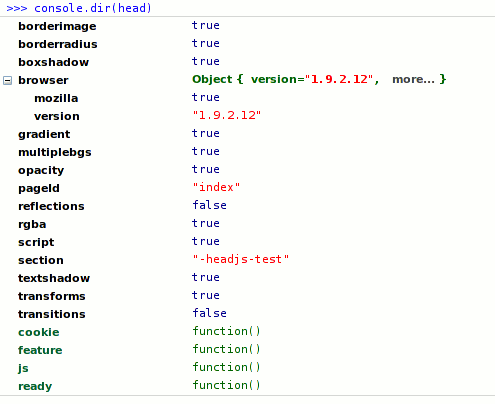

Highlights
JavaScript loader
Load scripts in parallel but execute in order
head.js("/path/to/jquery.js", "/google/analytics.js", "/js/site.js", function() {
// all done
});
Head JS loads scripts in parallel without blocking the page. The performance will be improved even with a single minified script.
JavaScript organizer
You've read the books and placed SCRIPT SRC tags on the bottom. Good. But can you do this?
// use jQuery on the body of the page even though it is not included yet
head.ready(function() {
$("#my").jquery_plugin();
});
// load jQuery on bottom of the page
head.js("/path/to/jquery.js");
A typical problem in templating systems or in pages with separate header/footer files.
CSS modernizer
HeadJS adds classes to the HTML root element so that you can do this
/* target CSS for browsers without box-shadow support */
.no-boxshadow .box {
border: 2px solid #ddd;
}
The focus is on CSS3 styling and it's easy to add more tests. Minimalism is a must. It's your HEAD again.
HTML5 enabler
DIV is good but HeadJS let's you be semantic and futuristic
<style>
article { text-shadow:0 0 1px #ccc; }
</style>
<!-- works in IE too -->
<article>
<header></header>
<section></section>
<footer></footer>
</article>
Screen size detector
Design pages for 1980px wide screen and make it also work on 10" laptops and mobile phones. Viewport size is the single most important thing when developing mobile sites.
/* screen size less than 1024 pixels */
.lt-1024 #hero { background-image:(medium.jpg); }
/* fine tune for mobile phone */
.lt-640 #hero { background-image:(small.jpg); }
If you resize the browser window your CSS rules will dynamically follow. Head JS does it behind the scenes.
Dynamic CSS
Style for various application states
<script>
/* detect whether user is logged in. here we check for an existence of a cookie */
head.feature("logged", mycookielib.get_cookie("auth_token"));
</script>
<style>
/* .. and write CSS accordingly */
.logged #login-box { display: none; }
</style>
Whenever you call `head.feature()` your CSS rules will follow.
CSS router
Target CSS for specific paths and pages
/* CSS targeted for home page only */
.root-section #index-page
/* make sidebar visible under /plugins */
.plugins-section #sidebar { display: block; }
Browser detector
All browsers and versions are detected but this is mostly for making IE behave well
/* older than IE9 */
.lt-ie9 .box { padding: 10px; }
/* CSS fixes for IE6 */
.ie6 ul { list-style: none; }
It's generally wiser to use feature detection but we all know IE: it's a feature in itself.
JavaScript feature detection
Every feature can also be found on the head (default) JavaScript variable.
if (head.logged) {
// do things
}
Theory
The problem with loading on top
A huge majority of the sites you visit today have many SCRIPT tags on the HEAD section of the page. Here is what you can see at apple.com:
<head>
<!-- copy/pasted on Saturday, November 27, 2010 -->
<script src="http://images.apple.com/global/scripts/lib/prototype.js"></script>
<script src="http://images.apple.com/global/scripts/lib/scriptaculous.js"></script>
<script src="http://images.apple.com/global/scripts/browserdetect.js"></script>
<script src="http://images.apple.com/global/scripts/apple_core.js"></script>
<script src="http://images.apple.com/global/scripts/search_decorator.js"></script>
<script src="http://images.apple.com/global/scripts/promomanager.js"></script>
<script src="http://images.apple.com/home/scripts/ticker.js"></script>
<script src="http://images.apple.com/home/scripts/promotracker.js"></script>
</head>
When entering the page you'll wait for all these scripts to be loaded before the rest of the page is rendered. In programming this is called blocking.
The situation can get even worse. Older browsers such as Firefox 3.5 load these scripts in sequence. The next script starts loading only after the previous script is fully loaded. The first impression will be awfully slow.
A common solution to this is to move the script tags on the bottom of the page, just before the end of BODY tag.
The problem with loading on bottom
When all scripts are included on the bottom of the page you'll end up fighting with these issues:
1. HTML5 and CSS3 cannot be used
The latest CSS3 features and the new HTML5 tags do not work on IE. HeadJS provides helper CSS classes to take care of these cross browser issues. But if you load Head JS on bottom of the page you'll experience a FOUC (Flash of Unstyled Content) effect: the page is first rendered without the helper classes and then re-rendered when the script is loaded. The same goes to screen size detection, CSS routing and Dynamic CSS. To avoid this ugly FOUC effect you need to load the script on top.
2. JavaScript organization get's hard
When the scripts are included on bottom you cannot do scripting that depend on these scripts before they are included. This is a common issue on server side template systems or with separate header/footer files where you typically work inside the middle section. You cannot execute any JavaScript that depend on the scripts that are included on the bottom.
The solution
The single best solution to these universal problems is to include Head JS on top of the page and load rest of the scripts with it. Make it the only SCRIPT SRC in your HEAD. A small job with following benefits
- the page continues right after the small 2kb head.min.js file is loaded
- you can use the latest CSS3 techniques and provide alternate CSS for IE and other old school browsers
- you can safely use HTML5 tags even with IE
- you can define JavaScript code on the middle of the page that depend on the scripts on the bottom
- you'll have a fast, parallel and non-blocking script loader at your disposal
In addition to that you can
- target CSS for specific screen widths, browsers and paths
- style your pages differently depending on the application state, such as whether user is logged or not
Usage
Script loading and execution
All script loading is done with head.js()
// the most simple case. load and execute single script without blocking.
head.js("/path/to/file.js");
// load a script and execute a function after it has been loaded
head.js("/path/to/file.js", function() {
});
// load files in parallel but execute them in sequence
head.js("file1.js", "file2.js", ... "fileN.js");
// execute function after all scripts have been loaded
head.js("file1.js", "file2.js", function() {
});
// files are loaded in parallel and executed in order they arrive
head.js("file1.js");
head.js("file2.js");
head.js("file3.js");
// the previous can also be written as
head.js("file1.js").js("file1.js").("file3.js");
Script organization
Call a function after all scripts have been loaded
head.ready(function() {
});
The functions supplied this way are executed in the same order as they are given.
// call a function after a particular file has been loaded
head.ready("file2.js", function() {
});
This makes sense if you have large script files and want to execute JavaScript before all files are loaded.
Otherwise you simply use head.ready() which gets executed after all files are loaded.
// a handy shortcut for head.ready()
head(function() {
})
Labeling scripts
By assigning labels the content developers need not to know the actual file paths.
// call a function immediately after jQuery Tools is loaded
head.ready("tools", function() {
// setup Tooltips
$(".tip").tooltip();
});
// load scripts by assigning a label for them
head.js(
{jquery: "http://http://ajax.googleapis.com/ajax/libs/jquery/1.4.4/jquery.min.js"},
{tools: "http://cnd.jquerytools.org/1.2.5/tiny/jquery.tools.min"},
{heavy: "http://a.heavy.library/we/dont/want/to/wait/for.js"},
// label is not required for all files
"http://can.be.mixed/with/unlabeled/files.js"
);
CSS3 feature detection
When a particular feature is supported a corresponding class name is added to the element.
When a feature is not supported the class name is prefixed with no-. For example:
.borderimage .box {
/* style for browsers that support border images */
}
.no-borderimage .box {
/* style for browsers that does not support border images */
}
On everyday CSS work you assume that a feature exists and code your CSS accordingly and you later add support for older browsers with the aid of "no-" classes.
CSS3 property list
Natively detected CSS3 properties
- borderimage define an image to be used instead of the normal border of an element
- borderradius support for rounded borders
- boxshadow a simple shadow for a box
- multiplebgs ability to define multiple background properties for a box
- opacity transparency support
- reflections a reflection effect for an object
- rgba allows to specify an opacity value for a color
- textshadow a simple shadow for a text
- transforms ability to scale
- transitions ability to animate changes to CSS properties
You can detect more with head.feature() call. Here we detect HTML5 video support
head.feature("video", function() {
var tag = document.createElement('video');
return !!tag.canPlayType;
});
Modernizr is a good source of tests. It's preferred to append the tests inside head.min.js file.
Screen size detection
Target CSS for various screen sizes. For example
/* styling for screens with resolution less than 1024 pixels */
.lt-1024 #hero { background-image:(medium.jpg); }
/* styling for small mobile screens */
.lt-640 #hero { background-image:(small.jpg); }
Today most sites are optimized for 1024px but with Head JS you can safely optimize for larger screens. Start by designing to the largest screen and then add CSS rules for smaller ones. You can freely decide the sizes you optimize for and the amount of them. By default Head JS watches following screen widths:
320, 480, 640, 768, 800, 1024, 1280, 1440, 1680, 1920
These are typical sizes for mobile phones, tablets and PC monitors. Here are sizes for Apple devices:
iPhone3: 480 x 320
iPhone4: 960 x 640
iPad: 1024 x 768
screens: 800+
You can provide your own set of screen widths with head_conf variable:
var head_conf = { screens: [500, 700, 900] };
If you resize the browser window your CSS rules will be dynamically applied.
Browser detection
Target CSS for a specific browser. For example
/* CSS for IE version 7 and below */
.lt-ie8 .box { padding: 10px; }
/* CSS for IE6 only */
.ie6 ul { list-style: none; }
List of supported class names for various browsers
-
ieInternet Explorer -
webkitWebkit based browsers such as Safari and Chrome -
operaOpera -
mozillaMozilla based browsers such as Firefox
There are additional "less than" helper classes for IE.
// tweak CSS for IE versions 5 and below
.ie-lt6 li {
list-style-type: circle;
}
Versions 3 - 10 are covered. It is best to avoid browser detection if you are able to do feature detection. Sometimes it's not possible especially when it comes to IE.
CSS Routing
Say you are on a page: http://mydomain.com/addons/node/router.html. Following CSS selectors apply:
.addons-node-section { }
#router-page { }
For each given path you get a CSS class representing the "folder" and an ID representing the page. An empty page is "#index-page" and the site root is ".root-section". If you have an existing id assigned for the HTML element it will be overwritten. On this case you can place the id attribute for the BODY tag.
You can change the these suffixes with head_conf variable.
var head_conf = { section: '-area', page: ''};
Now the selectors are:
.addons-node-area { }
#router { }
JavaScript feature detection
Every feature can be found from th head global JavaScript variable. Here is a screenshot:

API
Method index
head.js(file1 ... fileN, [callback])
Immediately loads given javascript files and and executes them in the order they are supplied. if the last argument is a function it is called after all files are loaded and executed. Each file is either a string representing relative or absolute path of a JavaScript file.
Alternatively each file can be given as an object taking a form: { label: file_path }. The labels are a handy way to hide the actual file path from the content writers. See the ready method below.
head.ready(callback)
Executes the given callback after all JavaScript files have been loaded
head.ready(path_or_label, callback)
Execute the callback immediately after the given file or label is loaded and executed
head(callback), head(path_or_label, callback)
A convenience shortcut for head.ready
head.feature(name, flag)
Enable or disable a feature. features are stored as a class name to <html> element and on global head variable. if the flag arguments evaluates to true a feature is enabled. Call this method in your HEAD before the stylesheets are loaded.
Configuration
HeadJS is configured with a global head_conf variable before the script is loaded. For example:
<script>
var head_conf = { screens: [640, 1024, 1280, 1680] };
</script>
<script src="/js/head.min.js"></script>
List of configuration variables
-
headability to change global variable name. default: "head". Set to "JS" and you canJS.ready()for example -
screensan array of screen sizes to watch for
-
sectiona suffix for CSS class representing the current "folder". default: "-section" -
pagea suffix for CSS ID representing the current page. default: "-page"
Download
Development version (0.1.0 - early beta)
The library is not production ready yet. Watch Head JS on Github to hear about the first release.